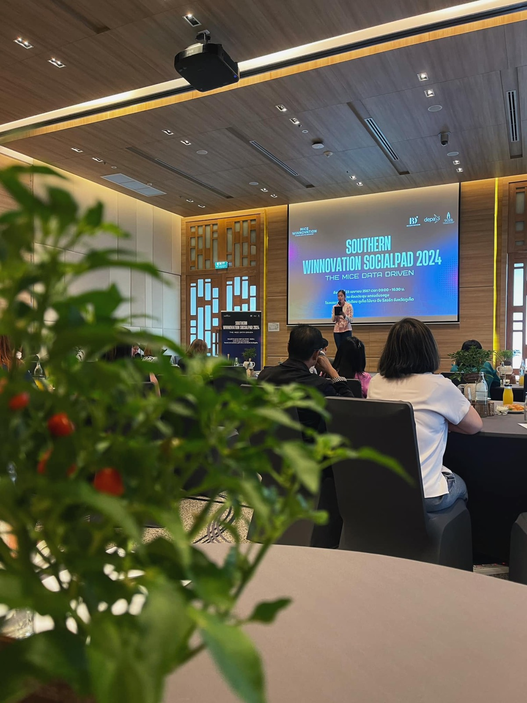

2567 · สังคม · บันทึกย่อย
TCEB จัดกิจกรรม MICE ที่บ้านอาจ้อ

วันนี้มาจัดงานแทบติดหลังบ้านอาจ้อเลย 🥰
ขอบคุณ TCEB ที่เปิดโอกาสและเอื้อเฟื้อช่วยเหลือผู้ประกอบการกันมาตลอด ❤️
บ้านอาจ้อ แม้นเป็นพื้นที่เล็กๆ แต่เรายังคงพัฒนาพื้นที่ให้พร้อมรับการประชุมอย่างต่อเนื่อง พัฒนางานบริการมืออาชีพโดยชุมชน 100% อยากได้อะไรเพิ่มเติม หรือติชมอะไรบอกได้ตลอดนะคับ 😇❤️
หวังว่าปีนี้อุตสาหกรรม MICE จะเติบโตขึ้นอีก บ้านอาจ้อพร้อม 💕 ภูเก็ตพร้อม ☀️ ประเทศไทยพร้อม 💪🔥
#SouthernWinnovationSocialPad2024
#MICEWinnovation
#TCEB ✨
#บ้านอาจ้อ ❤️